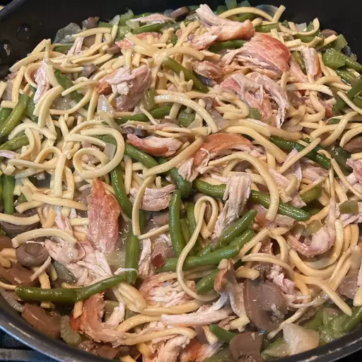

Chicken Chow Mein

Description
Served over cooked white rice or crisp noodles
Ingredients
- ¼ cup butter
- ½ cup chopped mushrooms
- 2 cups chopped celery
- 2 onions, chopped
- ¼ teaspoon garlic powder
- 2 ½ cups chicken broth
- 1 (15 ounce) can baby corn
- ½ cup green beans
- 2 teaspoons soy sauce
- 2 tablespoons cornstarch
- ⅓ cup cold water
- 3 cups cooked, cubed chicken meat
Steps
- In a wok or skillet, melt butter or margarine over medium heat. Add mushrooms, celery, onions and garlic powder: cook until the onions have wilter. Add chicken broth and baby corn. Continue cooking until celery is cooked but stull crisp. Stri in the green beans or bean sprouts and soy sauce
- Mix cornstarch and water together in a small bowl. Slowly stir into vegetables. Sauce should start to thicken a little. Mix in chicken, and heat through